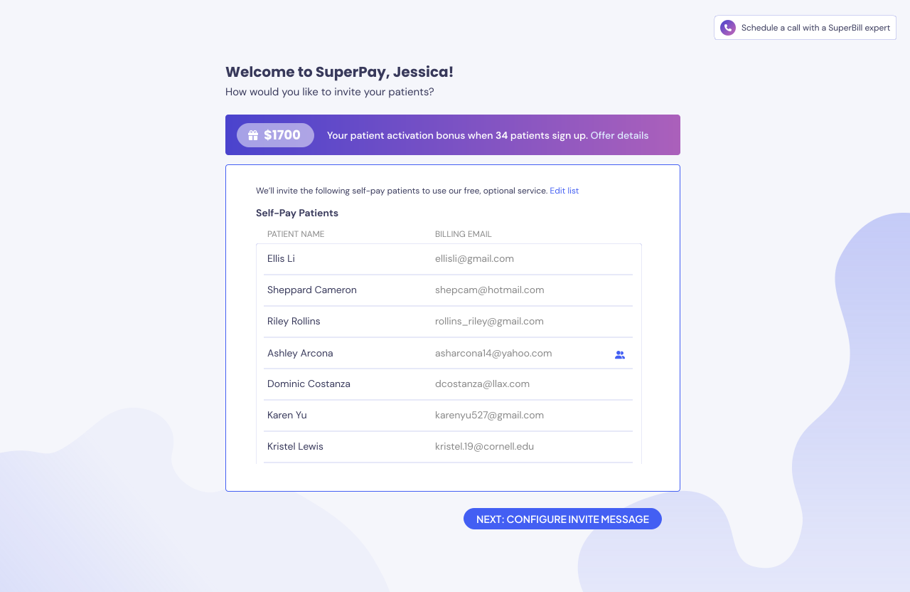
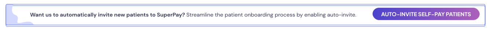

Easy as 1, 2, 3 - SuperPay Provider Portal
Encourage specialty practice providers (i.e. mental health practitioners, dietitians) to get their out-of-network patients to join SuperPay. The provider doesn’t have to do anything other than tell their patients to sign up – in fact, SuperPay results in less busy-work because now they don’t have to worry about claims.
Getting providers to trust us, be hyped about SuperPay, and encourage their patients to sign up for our service because ultimately (after various experiments and campaigns), we found we had to rely on the provider to be the one telling their patients to join SuperPay.
The ideal state is: a provider signs up, links their EHR (which allows us to get their list of patients), enables “auto-invite” which lets us send a message on their behalf to all their current and future out-of-network patients, and then they never have to come back here again.
For the provider onboarding process, I opted for a no-frills approach to allow prospective practitioners to self-service as quickly as possible:
For the provider portal, I designed a simple single-page dashboard with a list of active patients who were signed up with SuperPay, pending patients, and not-yet-invited patients. In an ideal state, providers don't ever need to come to this portal, this is just a book-keeping list for them to keep track of who is signed up.

The biggest blocker to our success was getting patients to sign up. Patients trust their provider though, so we tried various provider-focused experiments to increase patient activation:
Patient sign-up perk: Literally paying the provider $50 per patient who completes onboarding. Take our money!!
Auto-invite capability: A one-click button (which they can turn off), that automatically invites all future out-of-network patients
Materials and hanouts: Stuff for the provider to give their patients. Also makes us look more legit.
In-person happy hours with providers: Exhausting for me as an introvert, but thankfully we partnered with a couple mental health practitioners who helped us run the event. Also a nice chance for sneaky user research.